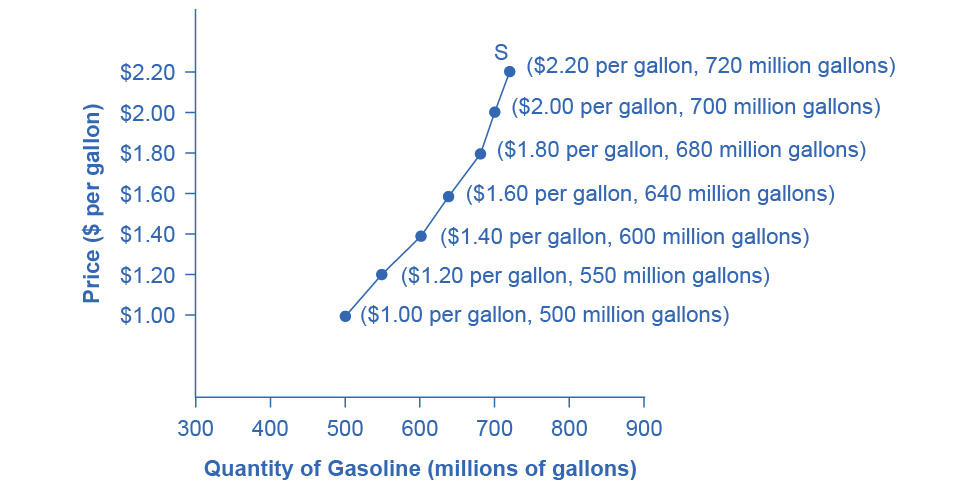
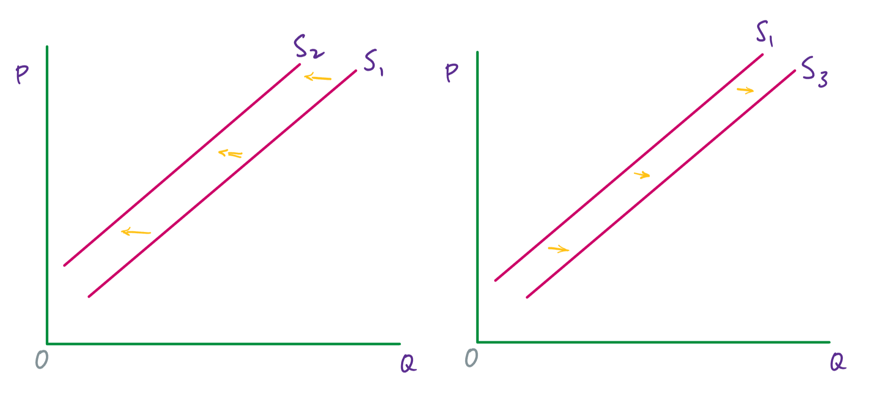
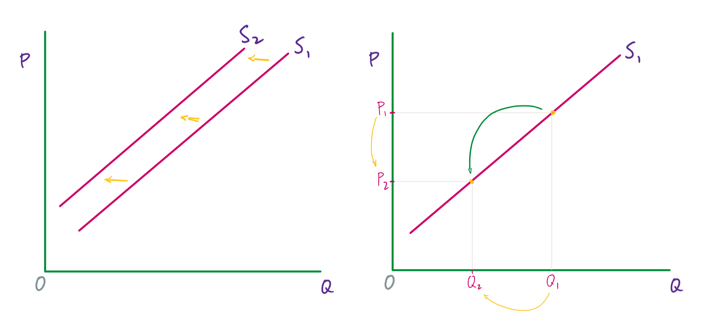

Supply of goods and services
Whereas demand is under the control of consumers, supply is determined by producers.
Supply: A schedule (i.e., table) or curve (in a graph) that shows the various quantities of a product that producers are willing and able to sell at each specific price in a series of possible prices during some specified time frame.
The price is what a producer receives for selling one unit of a good or service. A rise in the price of a good or service almost always causes an increase in the quantity supplied, while a fall in price will decrease the quantity supplied. This positive relationship between price and quantity supplied is called the law of supply.
This can be seen when, for instance, the price of gasoline rises and firms increase supply however they can. They might expand exploration for oil reserves; drill for more oil; invest in more pipelines and oil tankers to bring the oil to plants for refining into gasoline; build new oil refineries; purchase additional pipelines and trucks to ship the gasoline to gas stations; and open more gas stations or keep existing gas stations open longer.
‘Supply’ versus ‘quantity supplied’
Just as with demand and the quantity demanded, it is important to note the difference between supply and the quantity supplied. Supply is the relationship between a range of prices and the various quantities supplied at those prices. It is represented by a supply curve or a supply schedule (i.e., a table). The quantity supplied is a particular amount of a good or service that will be produced at some price, and it is represented by a specific point on the supply curve or is part of a price-quantity pair in a supply schedule.
An example
As with demand—and as stated in the definition—supply can be represented as a schedule (i.e., a table) or as a curve (i.e., by a line in a graph). Here is a supply schedule for gasoline.
| Price | Quantity supplied |
|---|---|
| (per gallon) | (millions of gallons) |
| $1.00 | 500 |
| $1.20 | 550 |
| $1.40 | 600 |
| $1.60 | 640 |
| $1.80 | 680 |
| $2.00 | 700 |
| $2.20 | 720 |
Every producer in this country—and we are assuming that there a number of them—has its own supply schedule. Table 1 gives the total amounts of gasoline that these producers would be willing and able to sell at each price, which makes it a market supply schedule. As we said for demand, since we are studying macroeconomics, we will be primarily be concerned with market supply (whether that is represented as a schedule or a curve).
The information given in table 1 can also be represented by a supply curve. Like the graph for demand, price is on the vertical axis and quantity (in this case quantity supplied) on the horizontal axis.

The shape of a supply curve will vary somewhat depending on the good or service that is being supplied. It can be steeper or flatter, straight or curved. Nearly all supply curves, however, have the positive slope that reflects the law of supply: as the price increases, the quantity supplied increases; and as the price decreases, the quantity supplied also decreases.
Why does the supply curve have a positive slope?
The immediate answer to this question that might come to mind is that as the price increases, producers see the opportunity to increase profits by selling more units of the good. That isn’t correct, however. (And for the model that we are developing here, we are assuming that each producer’s revenue just covers its costs, including all salaries, and so there aren’t any profits.) It is actually because, as we discussed in the section on the production possibility frontier, when more and more resources are devoted to the production of a good, the opportunity cost of each additional unit increases.
Producing wheat is a good example. Given the climate, soil, and existing infrastructure, hundreds of millions of bushels of wheat can easily be produced in many parts of the central United States. To increase wheat production beyond this baseline amount, producers have to move into areas that are less suited to growing wheat. These would be places where, ideally, it would be better to grow other crops. Hence, this additional production comes at a higher cost.
Increase wheat production even more would require growing it in areas that are even more costly, both in terms of growing, harvesting, and shipping the wheat, and in terms of the loss of other crops that this wheat is displacing.
So, the more wheat that is produced, the higher the cost of each additional unit. This is why the supply curve slopes upward.
Factors that change supply
Now, we will consider the factors that cause supply to change. Keep in mind that supply refers to the whole curve, and so these are factors that, for every price, producers provide more or fewer units of the good. In a graph, this change will be illustrated by the supply curve moving to left when supply decreases, or to the right when supply increases.

Changes to the price of inputs
The inputs used to produce goods are resources and intermediate goods. The cotton that is grown in Mississippi, for instance, is a resource; the cloth that is made from that cotton and used to make clothing is an intermediate good.
When the price of inputs increases, supply will decrease—and so the supply curve will shift to the left. When the price of inputs decreases, supply will increase—and so the supply curve will shift to the right.
Changes in weather and climate
Changes in weather and climate affect, especially, the production of agricultural goods, although non-agricultural goods can also be affected. For instance, infrastructure can be damaged or worker productivity can impacted by extreme weather.
If changes to weather and climate interfere with the production of a good, supply will decrease. If changes to weather and climate improve the production of a good, supply will increase.
Changes in technology
We will define technology as the knowledge used to turn resources into goods and services. This includes knowing how to use computers, computer programs, and now A.I., but it also covers a vast array of other knowledge. Agricultural practices are a good example. It has been known for thousands of years that rotating the crops that are grown on a piece of farm land will increase yields. But the development of the “Norfolk four-course system” in the 17th century—planting wheat, turnips, barley, and clover over four consecutive years without a fallow year—was one of the central innovations that drove the British Agricultural Revolution. This was a change in technology that increased supply.
If technology increases—that is, the knowledge about how to turn resources into goods and services increases or improves—then supply will increase. If technology decreases, then supply will decrease—although decreases in the knowledge itself is much less common than increases.
Changes to the number of firms
If the number of firms producing a good or service increases, then supply will increase. If the number of firms producing a good or service decreases, then supply will decrease.
Changes to taxes (on producers) and subsidies (to producers)
Government policies can affect supply through taxes and subsidies. From a firm’s perspective, a tax is much like higher costs for inputs. (These are taxes on the producers, not sales taxes, which are paid by consumers). Hence, taxes on producers decrease supply. Conversely, a decrease to the taxes on producers increases supply.
A government subsidy is a payment to a firm (or a reduction to its taxes). Since it is, in effect, the opposite of a tax, a subsidy given to producers increases supply. A decrease in subsidies, on the other hand, decreases supply.
‘Changes to supply’ versus ‘changes to the quantity supplied’
A change to supply is caused by a change to one of the factors just discussed: the price of inputs, weather and climate, technology, the number of firms and taxes and subsidies. This kind of change shifts the supply curve to the left or the right.
A change to the quantity supplied is caused by a change to the price. This change causes a move to a different point on the supply curve (and the supply curve itself doesn’t change).
